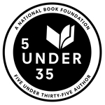

National Book Foundation Announces 5 Under 35

The National Book Foundation has announced this year's 5 Under 35, which consists of five debut authors nominated by honorees from previous National Book Awards.
Below is a list of each nominating author and, in bold, the 5 Under 35 honoree selected.
Karen Bender, a 2015 National Book Award finalist for Fiction for the short story collection Refund, selected S. Li, author of Transoceanic Lights (Harvard Square Editions).
Ta-Nehisi Coates, winner of the 2015 National Book Award for Nonfiction for Between the World and Me, selected Yaa Gyasi, author of Homegoing (Knopf / Penguin Random House).
Amity Gaige was a National Book Foundation 5 Under 35 honoree in 2006. Her most recent novel is Schroder, and she selected Thomas Pierce, author of Hall of Small Mammals (Riverhead / Penguin Random House).
Lauren Groff, whose Fates and Furies was a 2015 finalist for the National Book Award for Fiction, selected Greg Jackson, author of Prodigals (Farrar, Straus & Giroux / Macmillan).
Jacqueline Woodson’s Another Brooklyn is on the 2016 National Book Award Longlist for Fiction. She won the 2014 National Book Award for Young People’s Literature for her bestselling memoir Brown Girl Dreaming, and she selected Brit Bennett, author of The Mothers (Riverhead / Penguin Random House).